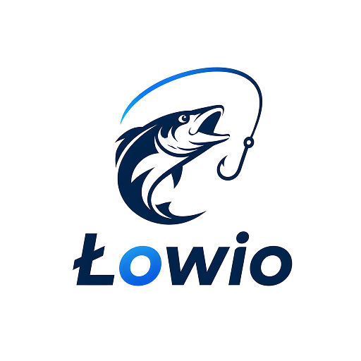
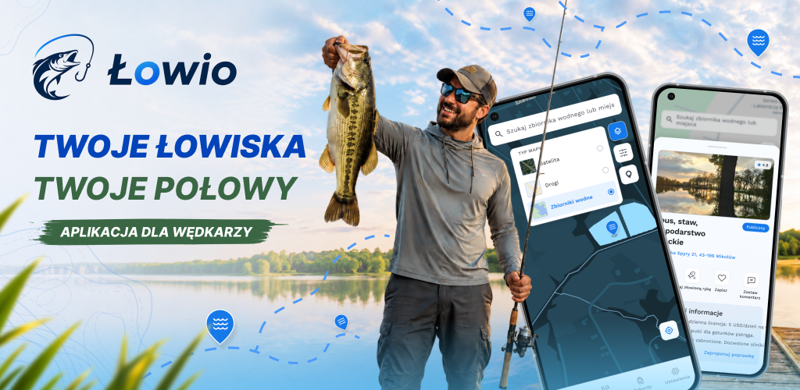
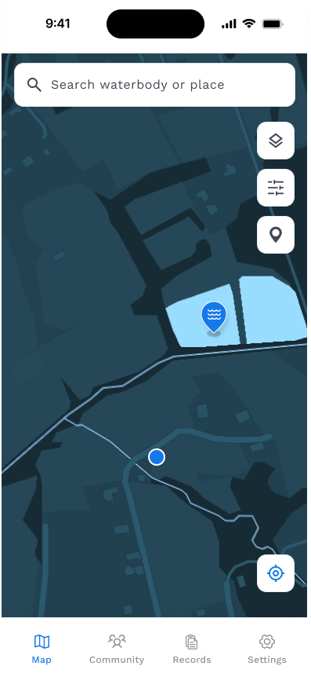
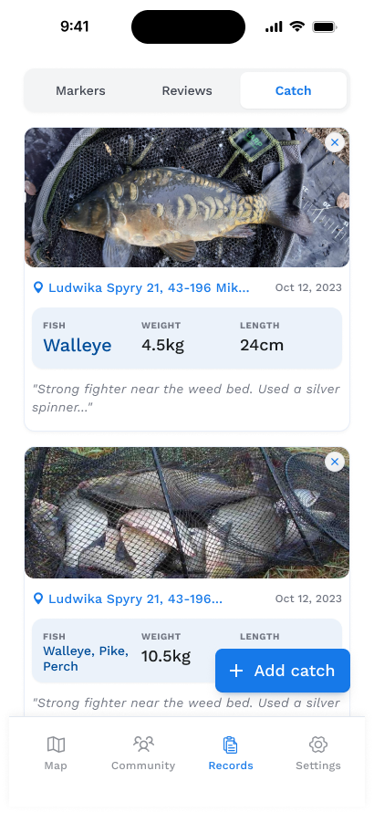
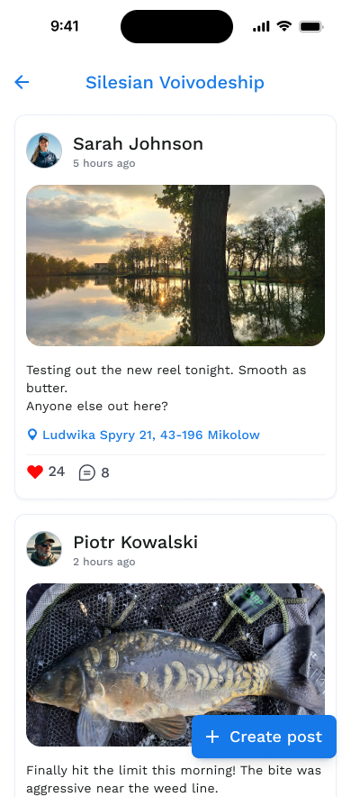

Mapa wód
Szybkie wyszukiwanie zbiorników, typy map i filtry dostępu pozwalają znaleźć dobre miejsce bez chaosu.

Łowio Zobacz aplikację
Aplikacja dla wędkarzy
Znajduj łowiska, zapisuj połowy i wracaj do miejsc, które naprawdę pracują nad wodą.
W terenie i po wyprawie
Szybkie wyszukiwanie zbiorników, typy map i filtry dostępu pozwalają znaleźć dobre miejsce bez chaosu.
Zapisuj punkty, dodawaj tytuły, notatki i zdjęcia, aby łatwo wrócić do sprawdzonych stanowisk.
Dodawaj gatunki, wagę, długość, komentarze i fotografie. Twoja historia zostaje uporządkowana.
Publikuj wpisy z regionu, reaguj na posty i zobacz, co dzieje się nad pobliskimi wodami.
Podgląd produktu
Interfejs Łowio jest zbudowany wokół najczęstszych momentów wyprawy: znalezienia wody, ustawienia znacznika, zapisania połowu i podzielenia się wynikiem.


Twoje rekordy
Łowio łączy zdjęcie, lokalizację, gatunek, wagę, długość i notatkę w czytelny zapis. Przy kolejnej wyprawie masz pod ręką wszystko, co było ważne.
Silesian Voivodeship
Regionalny feed pomaga odkrywać aktualne relacje, pytania i wyniki innych wędkarzy. To prosty sposób, żeby czuć puls łowisk bez przeładowania informacjami.
